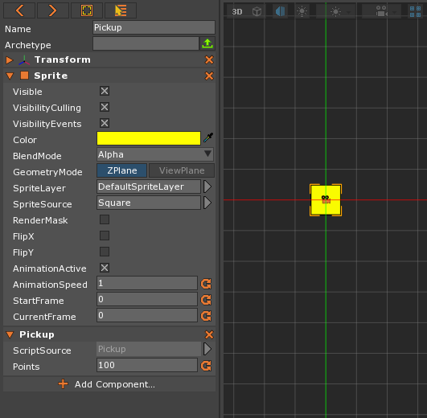
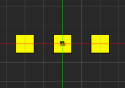
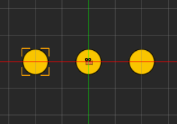
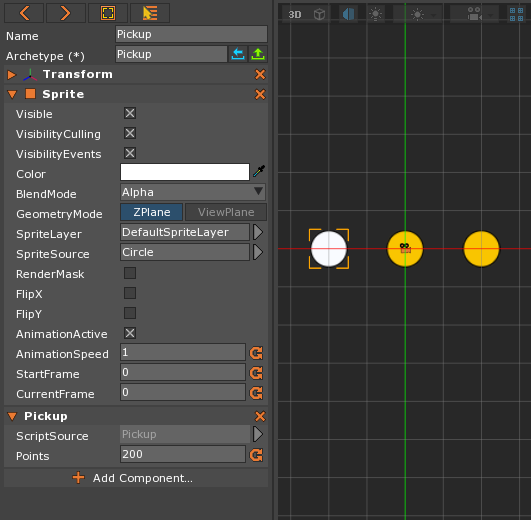
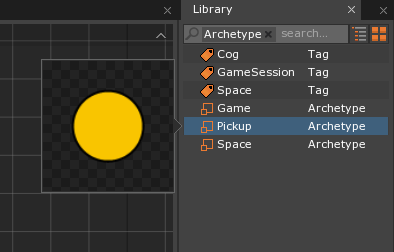

Archetypes
This lesson covers the creation and use of archetypes.
Learning Objectives
- Gain an understanding of archetypes and how they are used in the Zero Engine
- Create and modify an archetyped object
| Vocabulary | ||
|---|---|---|
Archetype |
Upload To Archetype | Revert Archetype |
Archetypes
An archetype in the Zero Engine (also known as a
blueprint, prefab, or template in other engines) is a collection of
components and their settings which is used to create
objects. All of the objects created from a certain
archetype start with the same data, but any changes to
that data after their creation do not affect the
archetype. One benefit of
archetypes is that any changes to the
archetype affect all of the objects you have created from
it. We are going to create some archetypes so that we can
use them to create objects later.
Adding a Pickup ZilchScript
- Create a New Project
- Add a new ZilchScript resource named: ‘Pickup’
Update your script to look like this:
class Pickup : ZilchComponent
{
[Property]
var Points : Integer = 0;
}
Creating an Object
- Command :
CreateSpriteor - In the Properties Window
- Set Name to:
Pickup - Under
Sprite- Set Color to : Yellow [ R: 255, G: 255, B: 0, A: 1.00 ]
- Add the Component Pickup
- Under Pickup
- Set Points to 100
- Under Pickup
- Set Name to:
Here’s what your object should look like:

Why Archetypes?
Imagine we were to copy and paste this object many times throught the
level. What happens if we want to change the value of this
pickup? We would have to find all pickups in the level and change their
Points values. Even with multiselect we might miss a few or there might be
pickups on other levels. Archetypes
will allow us to change all pickups at once.
Let’s create our first Archetype.
- Select the Object
- In the Properties Window
- Set the Archetype Name to:
Pickup - Press the green Upload to Archetype button
- Set the Archetype Name to:
This object is now Archetyped.
Creating Multiple Objects
Copy and paste the object multiple times.

Changing Archetyped Objects
Let’s change the property values of one of the pickups. Say that we want it to be more of a gold color and worth more points.
- In the Properties Window
- Under
Sprite- Set Color to : Gold [ R: 255, G: 200, B: 0, A: 1.00 ]
- Set
SpriteSourceto: Circle
- Under Pickup
- Set Points to: 200
- Under
Notice that object now looks like this:
{kind=link}
Notice, in the Properties Window, the Archetype property looks like
this:
Notice the (*) after the word Archetype
This means the object is modified from archetype.
This object has local changes that are not part of the
archetype. The Archetype property has two
buttons now: the  Revert to Archetype button and the Upload to
Archetype button. The Revert button will remove the local changes. The Upload
button will take the local changes and apply them to all
Revert to Archetype button and the Upload to
Archetype button. The Revert button will remove the local changes. The Upload
button will take the local changes and apply them to all
archetyped objects.
Uploading to Archetype
- In the Properties Window
- Press Upload button.

Notice all the objects have now changed to be the same. Check to see that
both the color and the Points under Pickup have changed. This change would
modify all archetyped objects in all
levels to the new values.
Reverting to Archetype
- In the Properties Window
- Under
Sprite- Set Color to: White [ R: 255, G: 255, B: 255, A: 1.00 ]
- Under

After testing it out we determine we like what we had before, so press the
Revert button to revert the object to gold.
Created Archetypes can be found in the Library.
- In the Library Window
Double-Clickon theArchetypesTag
- Select the
Pickuparchetype

Notice the property grid shows you the archetyped
object.
- Drag the
archetypefrom the library onto the game window.
This creates an instance of your archetyped object. This
allows you to quickly populate your levels with objects you
have already set up.